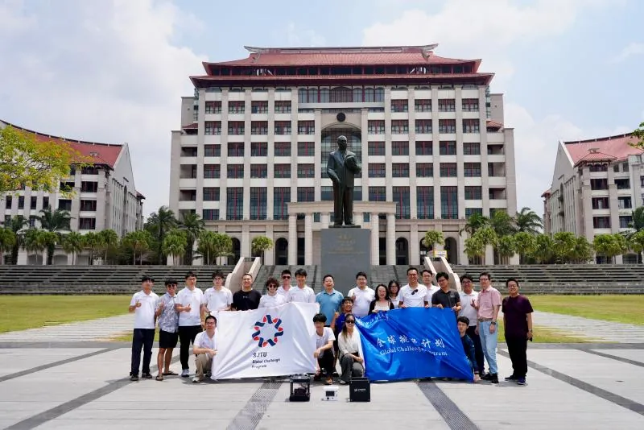

On the morning of 8 August, the team visited Xiamen University Malaysia (XMUM) in Sepang, Selangor. Siew Yan Hoh — associate professor in XMUM’s Department of Physics, member of our group and former TDLI postdoc — physics programme director Chung Fei Fang, staff and students, and Xu Tingyuan of China Communications Construction Company (Malaysia) took part.


Chung Fei Fang introduced XMUM, the first overseas branch campus of a Chinese university with its own campus, now ten years old and a key link for China–Malaysia research. Kim Siang Khaw presented the Global Challenge Program, the TDLI muon group and muon imaging, and looked ahead to cooperation. Yinghe Wang demonstrated the cosmic-ray muon transmission-imaging detector. In the Q&A he explained track reconstruction: each tracker has two orthogonal layers of scintillator bars, the hit bars give an x–y point at a known height, and joining the points from two trackers gives the muon track.
The team presented the department with TDLI’s “Tianwen” scroll. After the talks, TDLI, XMUM and China Communications Construction Company (Malaysia) discussed the needs and use cases for muon imaging in Malaysian infrastructure, and reached an agreement on the spot to work together on applying the technology.
This was stop 4 of five on the group’s Global Challenge Program 2026 trip across Peninsular Malaysia (4–11 August). Read the full trip summary, or the original report (in Chinese) on the 缪子科技实验室 WeChat account.
8月8日上午，项目组来到位于雪兰莪州雪邦（Sepang）的厦门大学马来西亚分校（XMUM）开展缪子物理交流活动。XMUM物理系副教授、课题组成员及李政道研究所前博士后何守仁（Hoh Siew Yan），XMUM物理学项目主任曾飞焕（Chung Fei Fang）及师生代表，以及中国交通建设（马来西亚）有限公司代表许庭源参与了交流。
曾飞焕介绍了XMUM建校十周年来的办学成果、学院构成和科研团队等情况。作为中国高校在海外设立的第一所拥有独立校园的分校，XMUM是中马科研合作的重要纽带。许金祥介绍了交大全球挑战计划项目、李政道研究所缪子物理研究团队以及缪子成像技术，并展望了合作前景。李政道研究所研究生王赢鹤现场演示了宇宙射线缪子透射成像装置；在问答环节，他向XMUM学生解释了径迹重建方法：每个径迹探测器由两层正交塑料闪烁体条组成，被击中的通道给出已知高度上的XY坐标，两个径迹探测器击中点的连线即为缪子径迹。
项目组向XMUM物理系赠送了李政道研究所特色的“天问”长卷。讲座结束后，李政道研究所、厦大马校和中交三方代表围绕缪子成像技术在马来西亚基建领域的需求、应用场景与合作路径深入交流，并现场达成合作意向，将共同推动该技术落地应用。
本文为课题组2026“全球挑战计划”马来西亚之行（8月4日至11日）五站交流中的第4站。查看行程总结，或阅读缪子科技实验室微信公众号原文。
文稿：温诗悦 摄影：叶梓泓、温诗悦